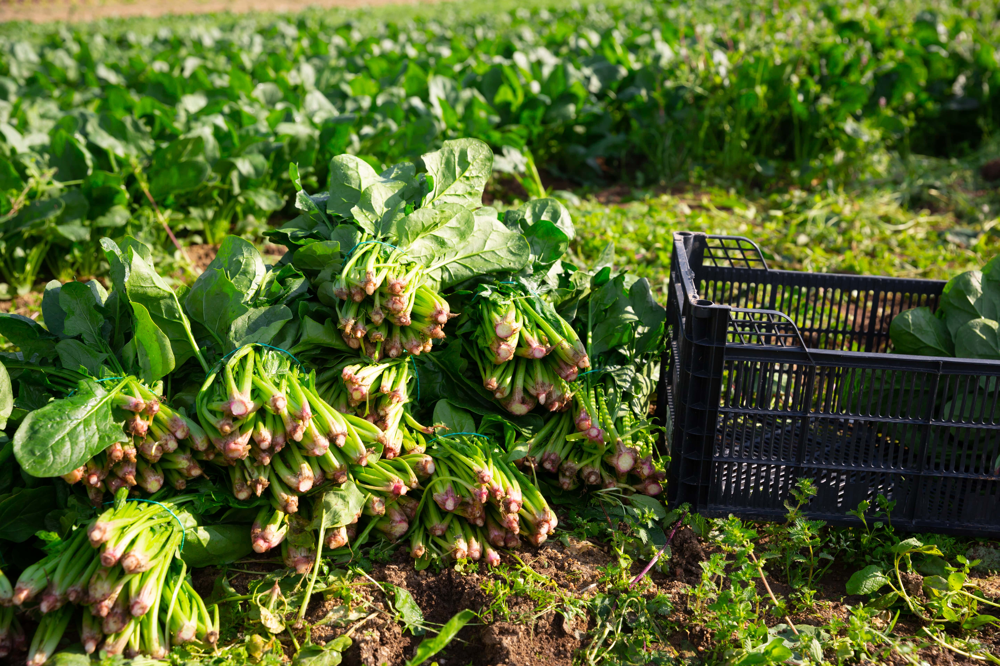
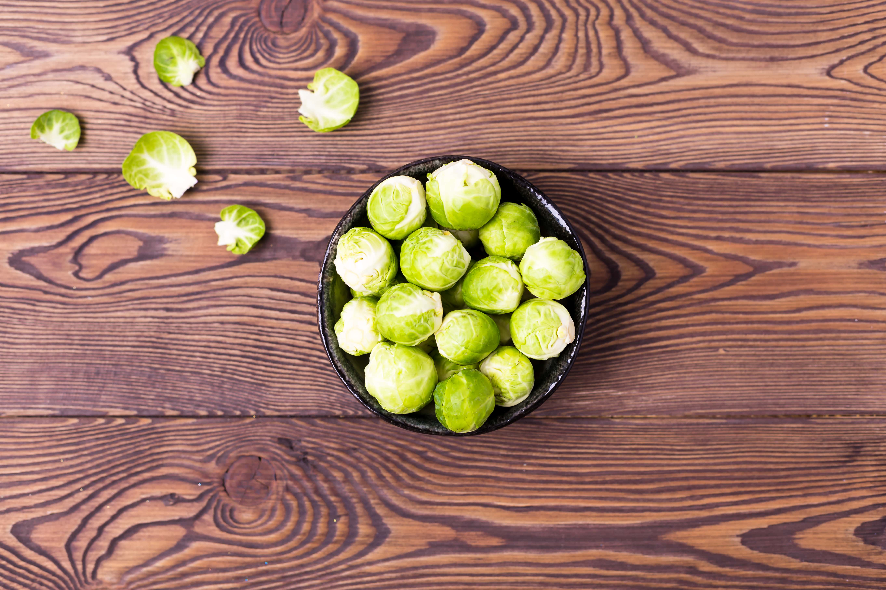

Unsere Öffnungszeiten:
Dienstag bis Samstag 7–12 Uhr, Donnerstag auch 15–18 Uhr
Für Rat und Tat stehen wir Ihnen auch telefonisch und per Mail zur
Verfügung:
Hofladen@agenfinow.de, Tel: 033362/123-44

Immer zu haben:
- • Welsfilet natur gebeizt geräuchert
- • Fischbällchen
- • Fischspieße
- • Kartoffeln
- • Zwiebeln
- Im Glas:
- • Wels-Matjes
- • Fischfond
- • Rucolapesto
- • Basilikumpesto

Jahreszeitlich wechselndes Sortiment:
Winter (eingeschränktes Angebot): u. a. diverse Kohl-, Wurzel-
und Rübensorten aus eigenem biologischem Anbau oder aus der
Region.
Kommen Sie vorbei, lassen Sie sich
überraschen!